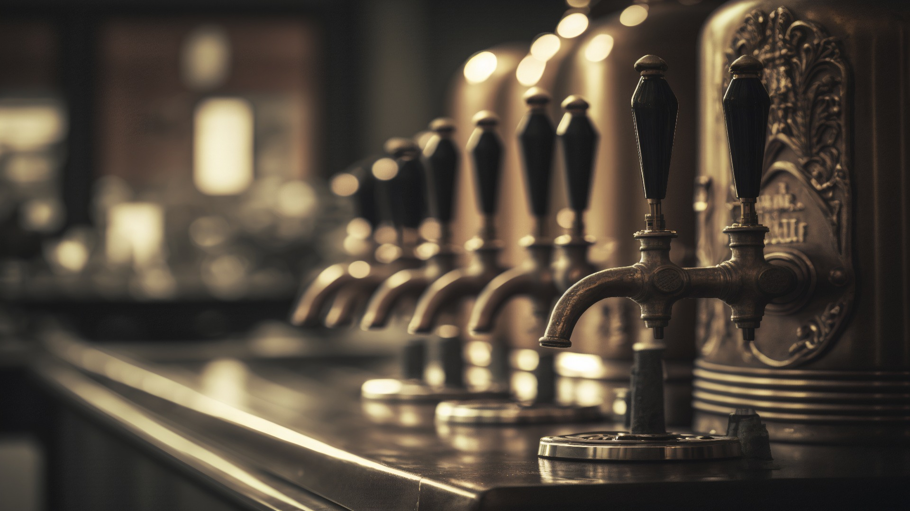
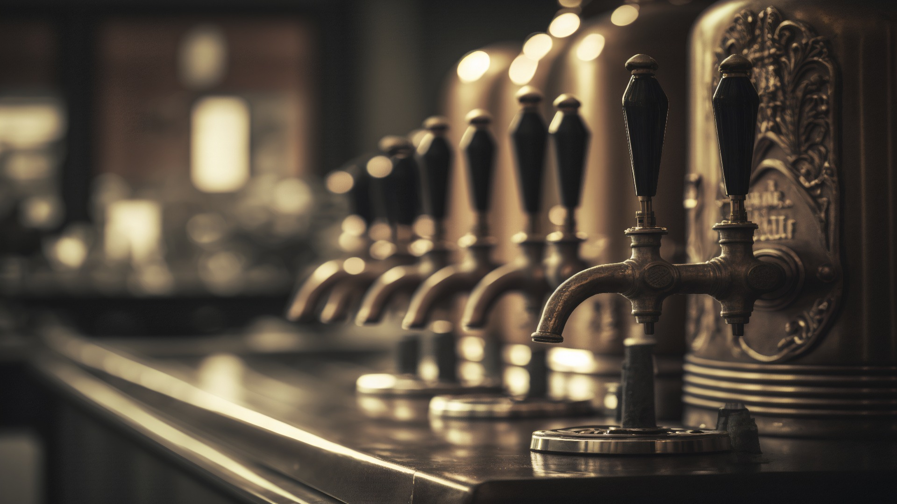

The Best Beer?
Europe
In Europe, beer brewing largely remained a home activity in medieval times. By the 14th and 15th centuries, beermaking was gradually changing from a family-oriented activity to an artisan one, with pubs and monasteries brewing their own beer for mass consumption.
Asia
Documented evidence and recently excavated tombs indicate that the Chinese brewed alcoholic drinks from both malted grain and grain converted by mold from prehistoric times, but that the malt conversion process was largely considered inefficient in comparison with the use of molds specially cultivated on rice carrier.
USA
Prior to Prohibition, there were thousands of breweries in the United States, mostly brewing heavier beers than modern US beer drinkers are used to. Beginning in 1920, most of these breweries went out of business, although some converted to soft drinks and other businesses.